WebEngine Qt Quick Custom Dialogs Example
Customizes UI elements of Qt WebEngine's dialogs.
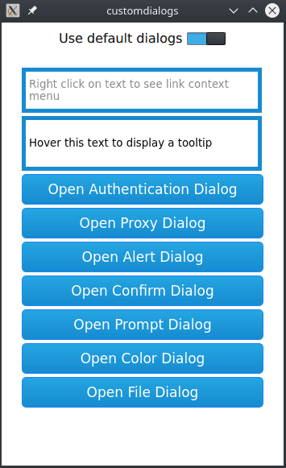
A web page might request dialogs for various purposes, such as authentication, picking colors, choosing files, and responding to JavaScript alerts, confirmation requests, and prompts.
Custom Dialogs demonstrates how to use WebEngine dialog request objects to implement custom dialogs for use instead of the default dialogs.
Running the Example
To run the example from Qt Creator, open the Welcome mode and select the example from Examples. For more information, visit Building and Running an Example.
UI Elements of WebEngineView
In this example, we create a simple index.html page that contains buttons and text fields for triggering a context menu and the following dialogs:
- HTTP Authentication Dialog
- Proxy Authentication Dialog
- JavaScript Alert, Confirm, and Prompt Dialogs
- Color Picker Dialog
- File Picker Dialog
Triggering Dialogs
As mentioned, the index.html file is responsible for triggering the dialogs from the side of HTML and JavaScript. Additionally, the example program starts a localhost TCP server returning the mocked HTTP responses needed to trigger proxy and HTTP authentication dialogs.
Custom Dialogs
The custom dialogs are just Qt Quick Designer UI Forms without any business logic. The point here is to present the glue code that is required to display the custom dialog for a particular web engine dialog or a menu request.
Creating the Main Window
In main.cpp, we initialize the WebEngine the same way as in the WebEngine Qt Quick Minimal Example:
int main(int argc, char *argv[]) { QCoreApplication::setOrganizationName("QtExamples"); QCoreApplication::setAttribute(Qt::AA_EnableHighDpiScaling); QtWebEngine::initialize(); Application app(argc, argv); QQmlApplicationEngine engine; Server *server = new Server(&engine); engine.load(QUrl(QStringLiteral("qrc:/main.qml"))); QTimer::singleShot(0, server, &Server::run); QNetworkProxy proxy; proxy.setType(QNetworkProxy::HttpProxy); proxy.setHostName("localhost"); proxy.setPort(5555); QNetworkProxy::setApplicationProxy(proxy); return app.exec(); }
In addition, we set up a proxy and a TCP server to be able to simulate proxy and HTTP authetication requests.
In main.qml, we create a top level window, which contains a StackView with a SwitchButton and a WebView:
import QtQuick.Window 2.0 Window { width: 350 height: 550 visible: true Controls.StackView { id: stackView anchors.fill: parent focus: true initialItem: Item { id: main width: parent.width height: parent.height ColumnLayout { anchors.fill: parent SwitchButton { id: switcher Layout.fillWidth: true } WebView { id: webView useDefaultDialogs: switcher.checked Layout.fillWidth: true Layout.fillHeight: true } } } function closeForm() { pop(main); } function openForm(form) { push(form); currentItem.closeForm.connect(closeForm); } } Component.onCompleted: { webView.openForm.connect(stackView.openForm); } }
Handling Web Engine Requests
In this example, we implement the handling of the following web engine requests:
- ContextMenuRequest
- AuthenticationDialogRequest
- JavaScriptDialogRequest
- ColorDialogRequest
- FileDialogRequest
Context Menu Requests
ContextMenuRequest is a request object that is passed as a parameter of the WebEngineView::contextMenuRequested signal. We use the onContextMenuRequested signal handler to handle requests for #openMenu URL links:
WebEngineView { ... onContextMenuRequested: function(request) { // we only show menu for links with #openMenu if (!request.linkUrl.toString().endsWith("#openMenu")) { request.accepted = true; return; } // return early to show default menu if (useDefaultDialogs) return; request.accepted = true; openForm({item: Qt.resolvedUrl("forms/Menu.qml"), properties: {"request": request}}); } ... }
The first text field from the top on our page triggers the request. Next, we check whether we should use the default menu. If not, we accept the request and switch the view to show the MenuForm:
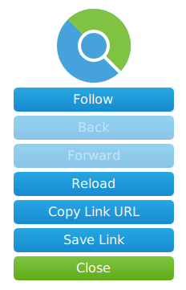
MenuForm { property QtObject request signal closeForm() followLink.onClicked: closeForm() back.onClicked: closeForm() forward.onClicked: closeForm() reload.onClicked: closeForm() copyLinkUrl.onClicked: closeForm() saveLink.onClicked: closeForm() close.onClicked: closeForm() Component.onCompleted: { back.btnEnable = false; forward.btnEnable = false; } }
To keep things simple, we do not provide any logic on component completion, and we simply close the form on any action.
Tooltip Requests
TooltipRequest is a request object that is passed as a parameter of the WebEngineView::tooltipRequested signal. We use the onTooltipRequested signal handler to handle requests for custom tooltip menus at specific positions:
WebEngineView { ... onTooltipRequested: function(request) { if (useDefaultDialogs) return; if (request.type == TooltipRequest.Show) { tooltip.visible = true; tooltip.x = request.x; tooltip.y = request.y; tooltip.text = request.text; } else { tooltip.visible = false; } request.accepted = true; } ... }
The second text field from the top on our page triggers the request. Next, we check whether we should use the default menu. If not, we accept the request and show a custom QML element as tooltip:
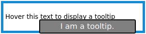
Rectangle {
id: tooltip
width: 200
height: 30
z: 50
visible: false
color: "gray"
border.color: "black"
border.width: 2
radius: 3
property string text: ""
Text {
x: 0
y: 0
color: "#ffffff"
text: parent.text
font.pointSize: 12
anchors.horizontalCenter: parent.horizontalCenter
anchors.verticalCenter: parent.verticalCenter
font.bold: false
}
Authentication Dialog Requests
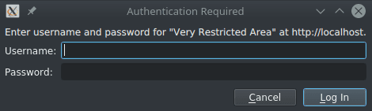
AuthenticationDialogRequest is a request object that is passed as a parameter of the WebEngineView::authenticationDialogRequested signal:
WebEngineView { ... onAuthenticationDialogRequested: function(request) { if (useDefaultDialogs) return; request.accepted = true; openForm({item: Qt.resolvedUrl("forms/Authentication.qml"), properties: {"request": request}}); } ... }
We use the onAuthenticationDialogRequested signal handler to check whether we should use the default authentication dialog. If not, we accept the request and switch the view to show the AuthenticationForm:
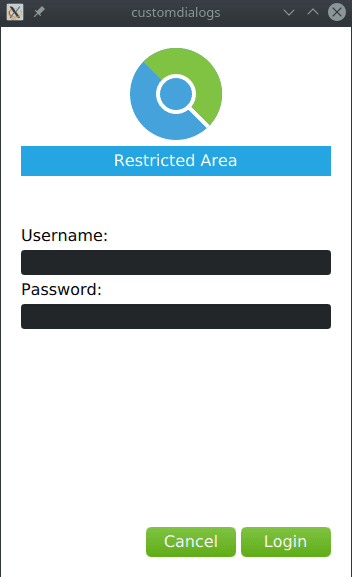
AuthenticationForm { property QtObject request signal closeForm() cancelButton.onClicked: { request.dialogReject(); closeForm(); } loginButton.onClicked: { request.dialogReject(); closeForm(); } Component.onCompleted: { switch (request.type) { case AuthenticationDialogRequest.AuthenticationTypeHTTP: console.log("HTTP Authentication Required. Host says: " + request.realm); break; case AuthenticationDialogRequest.AuthenticationTypeProxy: console.log("Proxy Authentication Required for: " + request.proxyHost); break; } } }
On component completion, we log the request type. The user can fill in the credentials and click Login. We provide onClicked handlers to accept or reject the authentication dialog. The TCP server on localhost does not handle real authentication, and therefore we call rejectDialog() instead of acceptDialog() also for the login button clicked signal.
JavaScript Dialog Requests
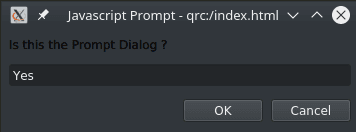
JavaScriptDialogRequest is a request object that is passed as a parameter of the WebEngineView::javaScriptDialogRequested signal:
WebEngineView { ... onJavaScriptDialogRequested: function(request) { if (useDefaultDialogs) return; request.accepted = true; openForm({item: Qt.resolvedUrl("forms/JavaScript.qml"), properties: {"request": request}}); } ... }
We use the onJavaScriptDialogRequested signal handler to check whether we should use the default JavaScript dialog. If not, we accept the request and switch the view to show the JavaScriptForm:
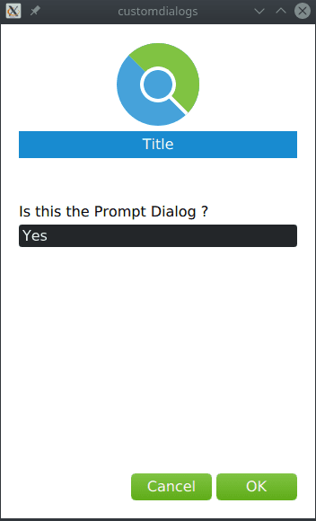
JavaScriptForm { property QtObject request signal closeForm() cancelButton.onClicked: { request.dialogReject(); closeForm(); } okButton.onClicked: { request.dialogAccept(prompt.text); closeForm(); } Component.onCompleted: { switch (request.type) { case JavaScriptDialogRequest.DialogTypeAlert: cancelButton.visible = false; title = qsTr("Alert"); message = request.message; prompt.text = ""; prompt.visible = false; break; case JavaScriptDialogRequest.DialogTypeConfirm: title = qsTr("Confirm"); message = request.message; prompt.text = ""; prompt.visible = false; break; case JavaScriptDialogRequest.DialogTypePrompt: title = qsTr("Prompt"); message = request.message; prompt.text = request.defaultText; prompt.visible = true; break; } } }
On component completion, we customize the form based on the request type. For a JavaScript prompt dialog we use dialogAccept() with the prompt.text argument.
Color Dialog Requests
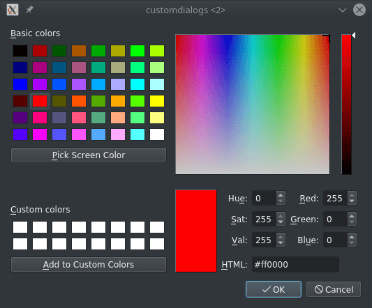
ColorDialogRequest is a request object that is passed as a parameter of the WebEngineView::colorDialogRequested signal:
WebEngineView { ... onColorDialogRequested: function(request) { if (useDefaultDialogs) return; request.accepted = true; openForm({item: Qt.resolvedUrl("forms/ColorPicker.qml"), properties: {"request": request}}); } ... }
We use the onColorDialogRequested signal handler to check whether we should use the default color picker dialog. If not, we accept the request and switch the view to show the ColorPickerForm:
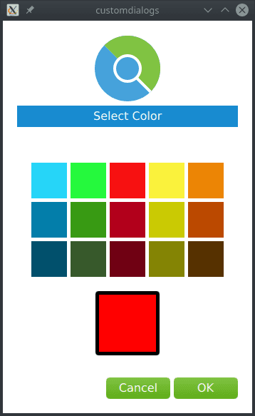
ColorPickerForm { property QtObject request signal closeForm() okButton.onClicked: { request.dialogAccept(colorPicker.color); closeForm(); } cancelButton.onClicked: { request.dialogReject(); closeForm(); } function createCallback(color) { return function() { colorPicker.color = color }; } Component.onCompleted:{ for (var i = 0; i < grid.children.length; i++) { var cell = grid.children[i]; cell.clicked.connect(createCallback(cell.color)); } colorPicker.color = request.color; } }
On component completion, we create callbacks for all the color cells. When the user selects the color and clicks OK, we pass the selected color to the dialogAccept() method.
File Dialog Requests
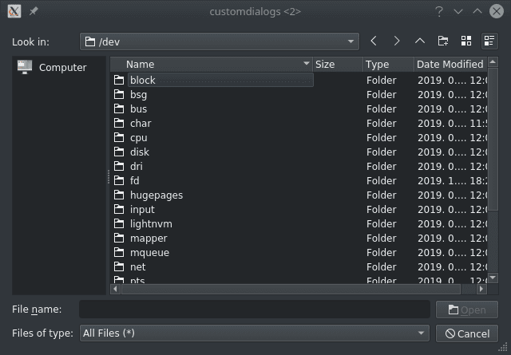
FileDialogRequest is a request object that is passed as a parameter of the WebEngineView::fileDialogRequested signal:
WebEngineView { ... onFileDialogRequested: function(request) { if (useDefaultDialogs) return; request.accepted = true; openForm({item: Qt.resolvedUrl("forms/FilePicker.qml"), properties: {"request": request}}); } }
We use the onFileDialogRequested signal handler to check whether we should use the default color picker dialog. If not, we accept the request and switch the view to show the FilePickerForm:
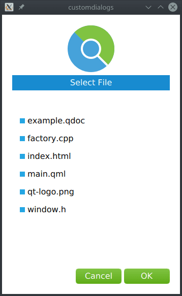
FilePickerForm { property QtObject request property string selectedFile signal closeForm() cancelButton.onClicked: { request.dialogReject(); closeForm(); } okButton.onClicked: { request.dialogAccept('/' + selectedFile); closeForm(); } function createCallback(fileIndex) { return function() { for (var i = 0; i < files.children.length; i++) { var file = files.children[i]; if (i === fileIndex) { selectedFile = file.text; file.selected = true; } else { file.selected = false; } } } } Component.onCompleted: { selectedFile = request.defaultFileName; for (var i = 0; i < files.children.length; i++) { var file = files.children[i]; file.clicked.connect(createCallback(i)); if (file.text === selectedFile) file.selected = true; } }
On component completion, we create callbacks for selecting files. When the user selects a file and clicks OK, we pass the selected file to the dialogAccept method.